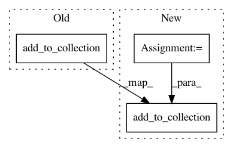

369afab10deee16ef572c738df083d2e74863e64,niftynet/application/toy_application.py,ToyApplication,connect_data_and_network,#ToyApplication#Any#Any#,43
Before Change
grads = [grads_d, grads_g]
gradients_collector.add_to_collection(grads)
outputs_collector.add_to_collection(
var=d_loss, name="ave_d_loss", average_over_devices=True,
collection=CONSOLE)
outputs_collector.add_to_collection(
var=g_loss, name="ave_g_loss", average_over_devices=True,
collection=CONSOLE)
After Change
collection=TF_SUMMARIES)
g_mean, g_var = tf.nn.moments(fake_features, axes=[0, 1, 2])
g_var = tf.sqrt(g_var)
outputs_collector.add_to_collection(
var=g_mean, name="mean", average_over_devices=True,
collection=CONSOLE)
outputs_collector.add_to_collection(
var=g_var, name="var", average_over_devices=True,
collection=CONSOLE)
outputs_collector.add_to_collection(
var=g_mean, name="generated_mean", average_over_devices=False,
collection=TF_SUMMARIES)
In pattern: SUPERPATTERN
Frequency: 5
Non-data size: 3
Instances
Project Name: NifTK/NiftyNet
Commit Name: 369afab10deee16ef572c738df083d2e74863e64
Time: 2017-08-27
Author: wenqi.li@ucl.ac.uk
File Name: niftynet/application/toy_application.py
Class Name: ToyApplication
Method Name: connect_data_and_network
Project Name: NifTK/NiftyNet
Commit Name: a009572bb9daa45e744ee24180b2c5defd9aee2e
Time: 2017-08-12
Author: wenqi.li@ucl.ac.uk
File Name: niftynet/application/segmentation_application.py
Class Name: SegmentationApplication
Method Name: connect_data_and_network
Project Name: NifTK/NiftyNet
Commit Name: 713ceaf662a02ff2966faecbe648a640ffdc0b0c
Time: 2018-02-02
Author: wenqi.li@ucl.ac.uk
File Name: niftynet/contrib/regression_weighted_sampler/isample_regression.py
Class Name: ISampleRegression
Method Name: connect_data_and_network
Project Name: NifTK/NiftyNet
Commit Name: 7f45299640c63f6fa903e59c7764bf8f03c72c1d
Time: 2017-08-14
Author: wenqi.li@ucl.ac.uk
File Name: niftynet/application/segmentation_application.py
Class Name: SegmentationApplication
Method Name: connect_data_and_network
Project Name: NifTK/NiftyNet
Commit Name: c5a2908de1cf2285775721008520d7b60bdbc9ca
Time: 2017-12-23
Author: wenqi.li@ucl.ac.uk
File Name: niftynet/application/label_driven_registration.py
Class Name: RegApp
Method Name: connect_data_and_network